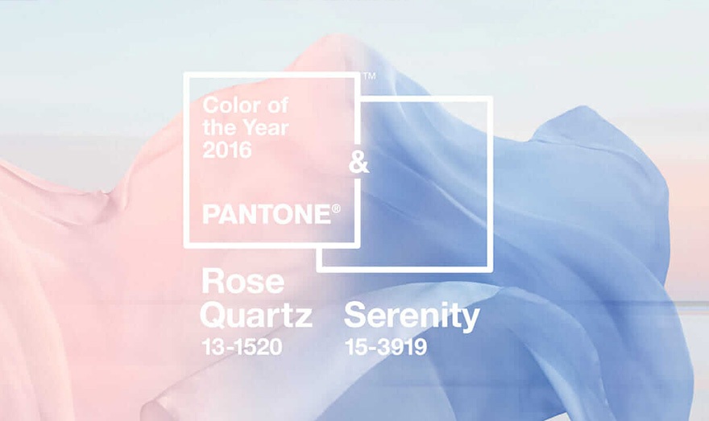
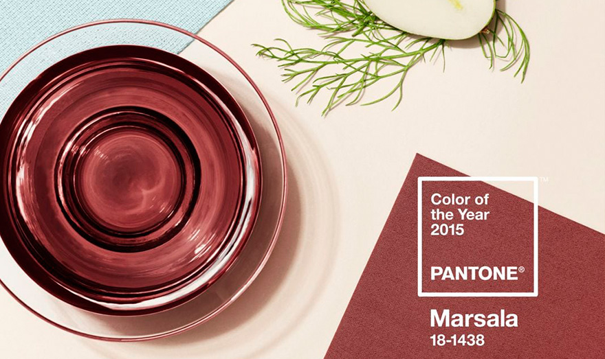
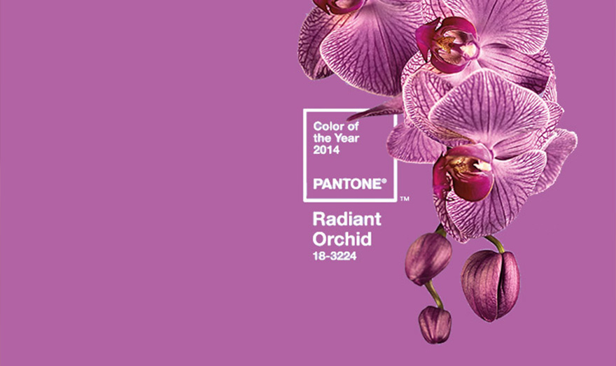

A marriage of color conveying a message of strength
and hopefulness that is both enduring and uplifting.
"The union of an enduring Ultimate Gray with the vibrant yellow Illuminating expresses a message of positivity supported by fortitude. Practical and rock solid but at the same time warming and optimistic, this is a color combination that gives us resilience and hope. We need to feel encouraged and uplifted, this is essential to the human spirit"
Leatrice Eiseman, Executive Director of the Pantone Color Institute
INTRODUCING CLASSIC BLUE: INSTILLING CALM, CONFIDENCE, AND CONNECTION, THIS ENDURING BLUE HUE HIGHLIGHTS OUR DESIRE FOR A DEPENDABLE AND STABLE FOUNDATION ON WHICH TO BUILD AS WE CROSS THE THRESHOLD INTO A NEW ERA
“We are living in a time that requires trust and faith. It is this kind of constancy and confidence that is expressed by PANTONE 19-4052 Classic Blue, a solid and dependable blue hue we can always rely on”Leatrice Eiseman, Executive Director of the Pantone Color Institute
AN ANIMATING AND LIFE-AFFIRMING CORAL HUE WITH A GOLDEN UNDERTONE THAT ENERGIZES AND ENLIVENS WITH A SOFTER EDGE
Color is an equalizing lens through which we experience our natural and digital realities and this is particularly true for Living Coral”Leatrice Eiseman, Executive Director of the Pantone Color Institute
INVENTIVE AND IMAGINATIVE, ULTRA VIOLET LIGHTS THE WAY TO WHAT IS YET TO COME
“We are living in a time that requires trust and faith. It is this kind of constancy and confidence that is expressed by PANTONE 19-4052 Classic Blue, a solid and dependable blue hue we can always rely on”Leatrice Eiseman, Executive Director of the Pantone Color Institute
A REFRESHING AND REVITALIZING SHADE, GREENERY IS SYMBOLIC OF NEW BEGINNINGS
“Greenery bursts forth in 2017 to provide us with the reassurance we yearn amid a tumultuous social and political environment. Satisfying our growing desire to rejuvenate and revitalize, Greenery symbolizes the reconnection we seek with nature, one another and a larger purpose”Leatrice Eiseman, Executive Director of the Pantone Color Institute
A SOFTER TAKE ON COLOR FOR 2016: FOR THE FIRST TIME, THE BLENDING OF TWO SHADES – ROSE QUARTZ AND SERENITY ARE CHOSEN AS THE PANTONE COLOR OF THE YEAR.
 “Joined together, Pantone Color of the Year 2016 Rose Quartz and Serenity demonstrated an inherent balance between a warmer embracing rose tone and the cooler tranquil blue, reflecting connection and wellness as well as a soothing sense of order and peace”Leatrice Eiseman, Executive Director of the Pantone Color Institute
A SOFTER TAKE ON COLOR FOR 2016: FOR THE FIRST TIME, THE BLENDING OF TWO SHADES – ROSE QUARTZ AND SERENITY ARE CHOSEN AS THE PANTONE COLOR OF THE YEAR.
“Joined together, Pantone Color of the Year 2016 Rose Quartz and Serenity demonstrated an inherent balance between a warmer embracing rose tone and the cooler tranquil blue, reflecting connection and wellness as well as a soothing sense of order and peace”Leatrice Eiseman, Executive Director of the Pantone Color Institute
A NATURALLY ROBUST AND EARTHY WINE RED, MARSALA ENRICHES OUR MINDS, BODIES AND SOULS
 “Much like the fortified wine that gives Marsala its name, this tasteful hue embodies the satisfying richness of a fulfilling meal while its grounding red-brown roots emanate a sophisticated, natural earthiness. This hearty, yet stylish tone is universally appealing and translates easily to fashion, beauty, industrial design, home furnishings and interiors”EXPRESSIVE, EXOTIC RADIANT ORCHID BLOOMS WITH CONFIDENCE AND WARMTH
 “Radiant Orchid reaches across the colour wheel to intrigue the eye and spark the imagination. From invitation to innovation, Pantone 18-3224 encourages expanded creativity and originality, which is increasingly valued in today’s society. An enchanting harmony of fuchsia, purple and pink undertones, Radiant Orchid is a captivating purple that draws you in with its beguiling charm”Leatrice Eiseman, Executive Director of the Pantone Color Institute
A LIVELY, RADIANT, LUSH GREEN, IS THE COLOR OF THE YEAR FOR 2013
“As it has throughout history, multifaceted Emerald continues to sparkle and fascinate. Symbolically, Emerald brings a sense of clarity, renewal and rejuvenation, which is so important in today's complex world. This powerful and universally-appealing tone translates easily to both fashion and home interiors”Leatrice Eiseman, Executive Director of the Pantone Color Institute
DANCE INTO THE NEW YEAR WITH THIS VIVACIOUS AND APPEALING REDDISH ORANGE
“Reminiscent of the radiant shadings of a sunset, Tangerine Tango marries the vivaciousness and adrenaline rush of red with the friendliness and warmth of yellow, to form a high-visibility, magnetic hue that emanates heat and energy”Leatrice Eiseman, Executive Director of the Pantone Color Institute
A COLOR FOR ALL SEASONS: Courageous. confident. vital. A brave new color, for a brave new world. let the bold spirit of honeysuckle infuse you, Lift you and carry you through the year. It’s a color for every day – with nothing “everyday” about it
“The intensity of this festive reddish pink allures and engages. In fact, this color, not the sweet fragrance of the flower blossoms for which it was named, is what attracts hummingbirds to nectar. Honeysuckle may also bring a wave of nostalgia for its associated delicious scent reminiscent of the carefree days of spring and summer”Leatrice Eiseman, Executive Director of the Pantone Color Institute
Turquoise inspires thoughts of soothing, tropical waters and a comforting escape from the everyday troubles of the world, while at the same time restoring our sense of wellbeing
“Whether envisioned as a tranquil ocean surrounding a tropical island or a protective stone warding off evil spirits, Turquoise is a color that most people respond to positively”MIMOSA EMBODIES HOPEFULNESS AND REASSURANCE IN A CLIMATE OF CHANGE
“The color yellow exemplifies the warmth and nurturing quality of the sun, properties we as humans are naturally drawn to for reassurance”Leatrice Eiseman, Executive Director of the Pantone Color Institute
Pantone selected it's colour of the year for 2008, Pantone 18-3943 Blue Iris, as it best represented the predicted colour direction for fashion, cosmetics and home products.
 “As a reflection of the times, Blue Iris brought together the dependable aspects of blue, underscored by a strong, soul-searching purple. Emotionally, Pantone 18-3943 was anchoring and meditative with a touch of magic. Combine Blue Iris with deeper plums, red-browns, yellow-greens, grapes and greys.”
“As a reflection of the times, Blue Iris brought together the dependable aspects of blue, underscored by a strong, soul-searching purple. Emotionally, Pantone 18-3943 was anchoring and meditative with a touch of magic. Combine Blue Iris with deeper plums, red-browns, yellow-greens, grapes and greys.”
PROVIDING A JOLT OF ENERGY AND INSPIRATION, DYNAMIC CHILI PEPPER BRINGS A SPLASH OF VITALITY TO FASHION, BEAUTY AND INTERIORS
“In 2007, there is an awareness of the melding of diverse cultural influences, and Chili Pepper is a reflection of exotic tastes both on the tongue and to the eye. Nothing reflects the spirit of adventure more than the color red. At the same time, Chili Pepper speaks to a certain level of confidence and taste. Incorporating this color into your wardrobe and living space adds drama and excitement, as it stimulates the senses.”Leatrice Eiseman, Executive Director of the Pantone Color Institute
It's considered a neutral color that expresses concern about the economy
“While most other colors of the year are brighter this neutral shade is warm and feeds into the trend of natural and organic. While it can be reminiscent of the desert and other natural environments, it is a top choice for home and fashion design.”Pantone looked to the sea for its color of 2005. Blue Turquoise was meant to be a gentler and cooler hue than Turquoise
“Following on from the 2004 theme of colours from nature, Pantone Blue Turquoise 15-5217, Pantone's colour of the year for 2005, takes it's insperation from the colour of the sea. Blue Turquoise is a gentler tone than true Turquoise with less green to produce a cooler hue”The Pantone Colour of the Year for 2004 is Tigerlily 17-1456
“Pantone Tigerlily 17-1456 acknowledges the cool exoticism of orange. Drawing its inspiration from the flowers around us, this warm hue contains both red and yellow to evoke power, passion and rejuvenation”Pantone's Aqua Sky 14-4811 was the 2003 Color of the Year
“A cool blue was chosen in hopes to restore hope and serenity. This quiet blue is more calming and cool than other blue-greens. ”The Pantone Colour of the Year for 2002 is True Red
“This vivid red was chosen for it's deep and meaningful hue. Pantone True Red 19-1664 can be associated with love, passion and power”Pantone launch the Colour of the Year for 2001 is Fuchsia Rose 17-2031
 “Drastically different from the pervious years colour Cerulean Blue, Fuchsia Rose PANTONE 17-2031 is much more exciting, and will appeal to everyones feminine side. Brighter, stronger, sexier, that's Pantone's colour message for 2001”
“Drastically different from the pervious years colour Cerulean Blue, Fuchsia Rose PANTONE 17-2031 is much more exciting, and will appeal to everyones feminine side. Brighter, stronger, sexier, that's Pantone's colour message for 2001”
Pantone announces it's first Colour of the Year for 2000 is Cerulean Blue, the colour for the millennium
“Cerulean reflects the colour of the sky on a serene, crystal clear day. Lifestyle movements suggest that consumers will be seeking inner peace and spiritual fulfilment in 2000. The new millennium is a paradoxical time in which we are heading toward an uncertain, yet exciting, future, and also looking back, trying to hold onto the security of the past. In this stressful, high-tech era, people will be searching for solace and Cerulean Blue produces the perfect calming effect”A marriage of color conveying a message of strength
and hopefulness that is both enduring and uplifting.
"The union of an enduring Ultimate Gray with the vibrant yellow Illuminating expresses a message of positivity supported by fortitude. Practical and rock solid but at the same time warming and optimistic, this is a color combination that gives us resilience and hope. We need to feel encouraged and uplifted, this is essential to the human spirit"
Leatrice Eiseman, Executive Director of the Pantone Color Institute
COLOR OF YEAR
- 1
- 2
- 0
- 1
- 2
- 3
- 4
- 5
- 6
- 7
- 8
- 9
- 0
- 1
- 2
- 3
- 4
- 5
- 6
- 7
- 8
- 9
- 0
- 1
- 2
- 3
- 4
- 5
- 6
- 7
- 8
- 9
Illuminating